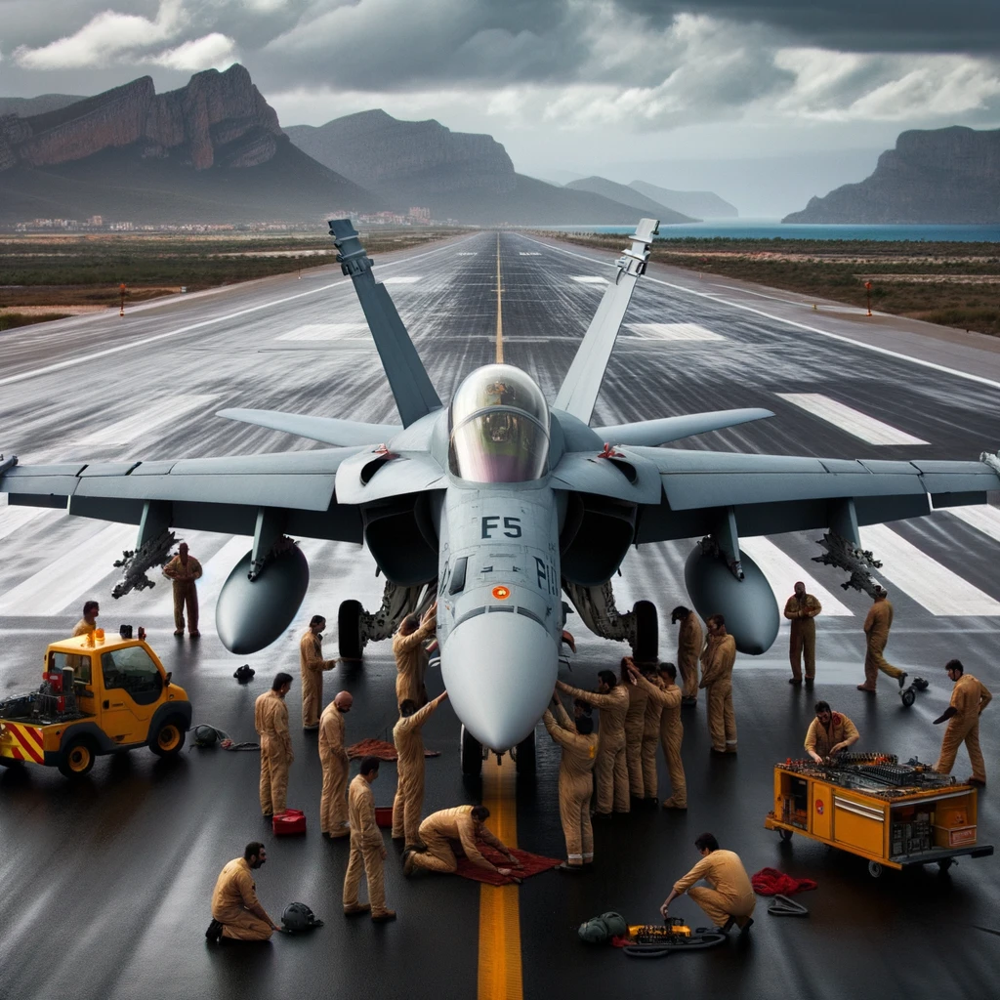

Caza polivalent
El McDonnell Douglas EF-18 Hornet és una versió específica del F/A-18
Hornet, un avió de combat multirol desenvolupat originalment per
McDonnell Douglas (ara part de Boeing). L'EF-18 és una variant
utilitzada específicament per l'Exèrcit de l'Aire Espanyol, on "E" fa
referència a "España" (Espanya en espanyol). Característiques i punts
destacats de l'EF-18 Hornet: Disseny versàtil: L'EF-18 Hornet és capaç
de realitzar missions d'intercepció aire-aire i atac aire-a-terra,
fent-lo un avió de combat veritablement multirol. Modernització:
L'Exèrcit de l'Aire Espanyol va modernitzar la seva flota d'EF-18 amb
el programa de millora "Hornet MLU", que va incloure millores en
l'aviónica, armament i altres sistemes. Aviónica avançada: L'EF-18
està equipat amb radar, sistemes de guerra electrònica i una àmplia
gamma de sensors que li permeten operar en entorns combatius
complexos. Armament divers: L'EF-18 pot ser equipat amb una àmplia
varietat d'armes, des de míssils aire-aire fins a bombes guiades per
làser i míssils aire-a-terra. Historial de servei: L'EF-18 ha estat en
servei amb l'Exèrcit de l'Aire Espanyol des dels anys 80 i ha
participat en diverses missions i campanyes, tant nacionals com
internacionals. Disseny bimotor: Amb dos motors, l'EF-18 ofereix una
gran fiabilitat i capacitat de maniobra, essent apte per a operacions
des de pistes curtes o portanavons. Formació: L'Exèrcit de l'Aire
Espanyol també utilitza versions d'entrenament biplaça de l'EF-18 per
a la formació de pilots. Legat: Malgrat que ha estat en servei durant
dècades, l'EF-18 continua sent una peça clau en la defensa aèria
espanyola, tot i que s'està considerant el seu reemplaçament per
avions més moderns en un futur pròxim. El McDonnell Douglas EF-18
Hornet ha estat un pilar en les operacions de l'Exèrcit de l'Aire
Espanyol des de la seva introducció, oferint una combinació
d'agilitat, potència i versatilitat que el fa apte per a una àmplia
gamma de missions.